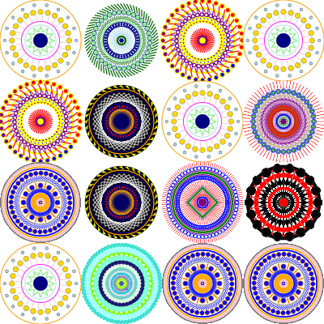
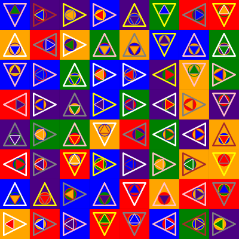
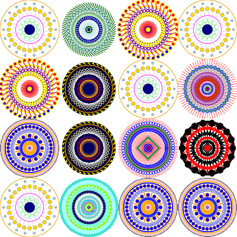
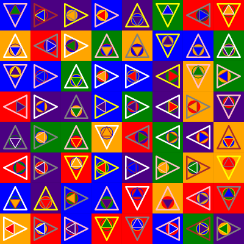

For Loops are a way of graphing functions within a certain range. When working in Spork Editor, there are many different ways For Loops can be utilized. Click on each image to see a little bit more about the inspiration for the image made from for loops.